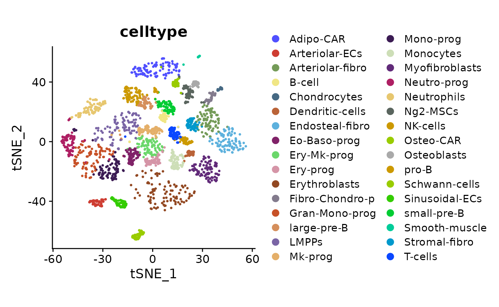

Introduction
Assignment of cell type labels to scRNA-seq clusters is particularly difficult when unexpected or poorly described populations are present. There are fully automated algorithms for cell type annotation, but sometimes a more in-depth analysis is helpful in understanding the captured cells. This is an example of exploratory cell type analysis using clustermole, starting with a Seurat object.
The dataset used in this example contains hematopoietic and stromal bone marrow populations (Baccin et al.). This experiment was selected because it includes both well-known as well as rare cell types.
Load data
Load relevant packages.
library(Seurat)
library(dplyr)
library(ggplot2)
library(ggsci)
library(clustermole)
#> Warning: replacing previous import 'S4Arrays::makeNindexFromArrayViewport' by
#> 'DelayedArray::makeNindexFromArrayViewport' when loading 'SummarizedExperiment'
#> Warning: replacing previous import 'S4Arrays::makeNindexFromArrayViewport' by
#> 'DelayedArray::makeNindexFromArrayViewport' when loading 'HDF5Array'Download the dataset, which is stored as a Seurat object. It was subset for this tutorial to reduce the size and speed up processing.
so <- readRDS(url("https://osf.io/cvnqb/download"))
so
#> An object of class Seurat
#> 16701 features across 2821 samples within 1 assay
#> Active assay: RNA (16701 features, 2872 variable features)
#> 2 layers present: counts, data
#> 3 dimensional reductions calculated: pca, tsne, umapCheck the experiment labels on a tSNE visualization, as shown in the original publication (original figure).
DimPlot(so, reduction = "tsne", group.by = "experiment", shuffle = TRUE) +
theme(aspect.ratio = 1, legend.text = element_text(size = rel(0.7))) +
scale_color_nejm()Check the cell type labels on a tSNE visualization.
DimPlot(so, reduction = "tsne", group.by = "celltype", shuffle = TRUE) +
theme(aspect.ratio = 1, legend.text = element_text(size = rel(0.8))) +
scale_color_igv()
Set the Seurat object cell identities to the predefined cell type labels for the next steps.
Idents(so) <- "celltype"
levels(Idents(so))
#> [1] "Adipo-CAR" "Arteriolar-ECs" "Arteriolar-fibro" "B-cell"
#> [5] "Chondrocytes" "Dendritic-cells" "Endosteal-fibro" "Eo-Baso-prog"
#> [9] "Ery-Mk-prog" "Ery-prog" "Erythroblasts" "Fibro-Chondro-p"
#> [13] "Gran-Mono-prog" "large-pre-B" "LMPPs" "Mk-prog"
#> [17] "Mono-prog" "Monocytes" "Myofibroblasts" "Neutro-prog"
#> [21] "Neutrophils" "Ng2-MSCs" "NK-cells" "Osteo-CAR"
#> [25] "Osteoblasts" "pro-B" "Schwann-cells" "Sinusoidal-ECs"
#> [29] "small-pre-B" "Smooth-muscle" "Stromal-fibro" "T-cells"Marker gene overlaps
One type of analysis facilitated by clustermole is based on comparison of marker genes.
We can start with the B-cells, which is a well-defined population used in many studies.
Find markers for the B-cell cluster.
b_markers_df <- FindMarkers(so, ident.1 = "B-cell", min.pct = 0.2, only.pos = TRUE, verbose = FALSE)
#> For a (much!) faster implementation of the Wilcoxon Rank Sum Test,
#> (default method for FindMarkers) please install the presto package
#> --------------------------------------------
#> install.packages('devtools')
#> devtools::install_github('immunogenomics/presto')
#> --------------------------------------------
#> After installation of presto, Seurat will automatically use the more
#> efficient implementation (no further action necessary).
#> This message will be shown once per session
nrow(b_markers_df)
#> [1] 1631This gives us a data frame with hundreds of genes. We can subset to just the best 25 markers.
b_markers <- head(rownames(b_markers_df), 25)
b_markers
#> [1] "Ms4a1" "Fcmr" "Cd74" "Ly6d"
#> [5] "Gm43603" "Bank1" "2010309G21Rik" "Fcer2a"
#> [9] "H2-DMb2" "H2-Eb1" "Cd79a" "H2-Aa"
#> [13] "Tnfrsf13c" "Ltb" "Cd79b" "Ccr7"
#> [17] "Fcrl1" "Spib" "Siglecg" "Cd83"
#> [21] "Fcrla" "Srpk3" "Cd22" "Cxcr5"
#> [25] "H2-Ab1"Check the overlap of B-cell markers with all clustermole cell type signatures.
overlaps_tbl <- clustermole_overlaps(genes = b_markers, species = "mm")Check the top scoring cell types corresponding to the B-cell cluster markers.
head(overlaps_tbl, 15)
#> # A tibble: 15 × 9
#> celltype_full db
#> <chr> <chr>
#> 1 follicular_B-cells | SaVanT SaVanT
#> 2 B cell (Renal Cell Carcinoma) | Kidney | Human | CellMarker CellMarker
#> 3 DURANTE_ADULT_OLFACTORY_NEUROEPITHELIUM_B_CELLS | Human | MSigDB MSigDB
#> 4 IMGN_B_Fo_MLN | Mouse | SaVanT SaVanT
#> 5 AIZARANI_LIVER_C34_MHC_II_POS_B_CELLS | Human | MSigDB MSigDB
#> 6 B cells | Immune system | Human | PanglaoDB PanglaoDB
#> 7 B cells naive | Immune system | Human | PanglaoDB PanglaoDB
#> 8 IMGN_B_Fo_LN | Mouse | SaVanT SaVanT
#> 9 IMGN_B_FrE_BM | Mouse | SaVanT SaVanT
#> 10 IMGN_B_T3_Sp | Mouse | SaVanT SaVanT
#> 11 spleen | SaVanT SaVanT
#> 12 B cell | Kidney | Human | CellMarker CellMarker
#> 13 FAN_EMBRYONIC_CTX_BRAIN_B_CELL | Human | MSigDB MSigDB
#> 14 IMGN_B1a_Sp | Mouse | SaVanT SaVanT
#> 15 IMGN_B_Fo_PC | Mouse | SaVanT SaVanT
#> # ℹ 7 more variables: species <chr>, organ <chr>, celltype <chr>,
#> # n_genes <int>, overlap <dbl>, p_value <dbl>, fdr <dbl>As would be expected for a well-defined population, the top results are various B-cell populations. We can repeat this process for other populations that are more obscure.
Find markers for the Adipo-CAR cluster. These are Cxcl12-abundant reticular (CAR) cells expressing adipocyte-lineage genes.
acar_markers_df <- FindMarkers(so, ident.1 = "Adipo-CAR", min.pct = 0.2, only.pos = TRUE, verbose = FALSE)
acar_markers <- head(rownames(acar_markers_df), 25)
acar_markers
#> [1] "Adipoq" "Kng1" "Kng2" "Esm1"
#> [5] "Cxcl12" "Lpl" "Gdpd2" "Agt"
#> [9] "Dpep1" "Lepr" "Fst" "Chrdl1"
#> [13] "Pdzrn4" "Kitl" "Cxcl14" "Ccl19"
#> [17] "Ptx3" "Ackr4" "1500009L16Rik" "Gas6"
#> [21] "Serpina12" "C4b" "Gm4951" "Fbln5"
#> [25] "Wisp2"Check the overlap of Adipo-CAR markers with all cell type signatures.
overlaps_tbl <- clustermole_overlaps(genes = acar_markers, species = "mm")Check the top scoring cell types for the Adipo-CAR cluster.
head(overlaps_tbl, 15)
#> # A tibble: 15 × 9
#> celltype_full db
#> <chr> <chr>
#> 1 IMGN_FRC_MLN | Mouse | SaVanT SaVanT
#> 2 OMENTUM | ARCHS4 ARCHS4
#> 3 HAY_BONE_MARROW_STROMAL | Human | MSigDB MSigDB
#> 4 Schwalie et al.Nature.P3 | Adipose tissue | Mouse | CellMarker CellMarker
#> 5 LUNG (BULK TISSUE) | ARCHS4 ARCHS4
#> 6 HPCA_Adipocytes | Human | SaVanT SaVanT
#> 7 IMGN_FRC_SLN | Mouse | SaVanT SaVanT
#> 8 HBA_Adipocyte | Human | SaVanT SaVanT
#> 9 Schwalie et al.Nature.G3 | Adipose tissue | Mouse | CellMarker CellMarker
#> 10 GASTRIC TISSUE (BULK) | ARCHS4 ARCHS4
#> 11 SUBCUTANEOUS ADIPOSE TISSUE | ARCHS4 ARCHS4
#> 12 ADIPOSE (BULK TISSUE) | ARCHS4 ARCHS4
#> 13 ASTROCYTE | ARCHS4 ARCHS4
#> 14 BREAST (BULK TISSUE) | ARCHS4 ARCHS4
#> 15 Medullary cell | Kidney | Mouse | CellMarker CellMarker
#> # ℹ 7 more variables: species <chr>, organ <chr>, celltype <chr>,
#> # n_genes <int>, overlap <dbl>, p_value <dbl>, fdr <dbl>The top results are more diverse than for B-cells, but related populations are among the top candidates.
Find markers for the Osteoblasts cluster.
o_markers_df <- FindMarkers(so, ident.1 = "Osteoblasts", min.pct = 0.2, only.pos = TRUE, verbose = FALSE)
o_markers <- head(rownames(o_markers_df), 25)
o_markers
#> [1] "Cpz" "Smpd3" "Col22a1" "Ifitm5"
#> [5] "Mlip" "Bglap" "Lipc" "Cgref1"
#> [9] "Col13a1" "Entpd3" "Fabp3" "Bglap2"
#> [13] "Cthrc1" "Bglap3" "Col11a2" "Rerg"
#> [17] "Cdo1" "Car3" "Slc36a2" "RP23-457J22.1"
#> [21] "Col24a1" "Col11a1" "Bmp3" "Cadm1"
#> [25] "Satb2"Check overlap of Osteoblasts markers with all cell type signatures.
overlaps_tbl <- clustermole_overlaps(genes = o_markers, species = "mm")Check the top scoring cell types for the Osteoblasts cluster.
head(overlaps_tbl, 15)
#> # A tibble: 15 × 9
#> celltype_full db
#> <chr> <chr>
#> 1 DCLK1+ progenitor cell | Large intestine | Human | CellMarker CellMarker
#> 2 GAO_LARGE_INTESTINE_24W_C1_DCLK1POS_PROGENITOR | Human | MSigDB MSigDB
#> 3 VALVE | ARCHS4 ARCHS4
#> 4 OSTEOBLAST | ARCHS4 ARCHS4
#> 5 Cartilage | Human | TISSUES TISSUES
#> 6 GASTRIC TISSUE (BULK) | ARCHS4 ARCHS4
#> 7 HAY_BONE_MARROW_PLASMA_CELL | Human | MSigDB MSigDB
#> 8 Chondrogenic cell | Adipose tissue | Mouse | CellMarker CellMarker
#> 9 MANNO_MIDBRAIN_NEUROTYPES_HSERT | Human | MSigDB MSigDB
#> 10 Intestine | Mouse | TISSUES TISSUES
#> 11 BREAST (BULK TISSUE) | ARCHS4 ARCHS4
#> 12 RENAL CORTEX | ARCHS4 ARCHS4
#> 13 Cancer stem cell (Glioblastoma) | Brain | Human | CellMarker CellMarker
#> 14 LUNG (BULK TISSUE) | ARCHS4 ARCHS4
#> 15 HAIR FOLLICLE | ARCHS4 ARCHS4
#> # ℹ 7 more variables: species <chr>, organ <chr>, celltype <chr>,
#> # n_genes <int>, overlap <dbl>, p_value <dbl>, fdr <dbl>The top results are again more diverse than for B-cells, but the appropriate populations are listed.
Enrichment of markers
Rather than comparing marker genes, it’s also possible to run enrichment of cell type signatures across all genes. This avoids having to define an optimal set of markers.
Calculate the average expression levels for each cell type.
avg_exp_mat <- AverageExpression(so)
#> As of Seurat v5, we recommend using AggregateExpression to perform pseudo-bulk analysis.
#> This message is displayed once per session.Convert to a regular matrix and log-transform.
Preview the expression matrix.
avg_exp_mat[1:5, 1:5]
#> Adipo-CAR Arteriolar-ECs Arteriolar-fibro B-cell Chondrocytes
#> Sox17 0.0000000 2.5800606 0.0000000 0.0000000 0.00000000
#> Mrpl15 0.4315376 0.5284282 0.3304569 0.8481054 0.07307574
#> Lypla1 0.1990537 0.4477973 0.2448583 0.6352917 0.09397463
#> Gm37988 0.0000000 0.0000000 0.0000000 0.0000000 0.00000000
#> Tcea1 0.5620502 0.7077588 0.6135480 0.7798060 0.52126901Run enrichment of all cell type signatures across all clusters.
enrich_tbl <- clustermole_enrichment(expr_mat = avg_exp_mat, species = "mm")Check the most enriched cell types for the B-cell cluster.
enrich_tbl %>%
filter(cluster == "B-cell") %>%
head(15)
#> # A tibble: 15 × 9
#> cluster celltype_full
#> <chr> <chr>
#> 1 B-cell naive B-cells_BLUEPRINT_1 | Human | xCell
#> 2 B-cell naive B-cells_BLUEPRINT_3 | Human | xCell
#> 3 B-cell Follicular B cell | Lymphoid tissue | Mouse | CellMarker
#> 4 B-cell B-cells_HPCA_3 | Human | xCell
#> 5 B-cell Memory B cell | Lymphoid tissue | Mouse | CellMarker
#> 6 B-cell Class-switched memory B-cells_NOVERSHTERN_1 | Human | xCell
#> 7 B-cell Class-switched memory B-cells_NOVERSHTERN_2 | Human | xCell
#> 8 B-cell Class-switched memory B-cells_NOVERSHTERN_3 | Human | xCell
#> 9 B-cell DURANTE_ADULT_OLFACTORY_NEUROEPITHELIUM_B_CELLS | Human | MSigDB
#> 10 B-cell Memory B-cells_HPCA_2 | Human | xCell
#> 11 B-cell M1 macrophage | Lung | Mouse | CellMarker
#> 12 B-cell Leukocyte | Blood | Human | CellMarker
#> 13 B-cell IMGN_B_T2_Sp | Mouse | SaVanT
#> 14 B-cell follicular_B-cells | SaVanT
#> 15 B-cell Leukocyte | Human | CellMarker
#> # ℹ 7 more variables: score <dbl>, score_rank <int>, db <chr>, species <chr>,
#> # organ <chr>, celltype <chr>, n_genes <int>As with the previous analysis, the top results are various B-cell populations.
Check the most enriched cell types for the Adipo-CAR cluster.
enrich_tbl %>%
filter(cluster == "Adipo-CAR") %>%
head(15)
#> # A tibble: 15 × 9
#> cluster celltype_full
#> <chr> <chr>
#> 1 Adipo-CAR Colorectal stem cell | Colorectum | Human | CellMarker
#> 2 Adipo-CAR Fibroblast | Mouse | CellMarker
#> 3 Adipo-CAR Cardiac progenitor cell | Heart | Human | CellMarker
#> 4 Adipo-CAR Rheaume et al.Nat Commun.16 | Retina | Mouse | CellMarker
#> 5 Adipo-CAR Erythroid cell | Human | TISSUES
#> 6 Adipo-CAR IMGN_Fi_MTS15+_Th | Mouse | SaVanT
#> 7 Adipo-CAR IMGN_FRC_MLN | Mouse | SaVanT
#> 8 Adipo-CAR Intestinal stem cell | Intestine | Mouse | CellMarker
#> 9 Adipo-CAR IMGN_FRC_SLN | Mouse | SaVanT
#> 10 Adipo-CAR Interneuron-selective cell | Brain | Mouse | CellMarker
#> 11 Adipo-CAR Smooth muscle cell | Brain | Mouse | CellMarker
#> 12 Adipo-CAR Glutaminergic neurons | Brain | Human | PanglaoDB
#> 13 Adipo-CAR Glutaminergic neurons | Brain | Mouse | PanglaoDB
#> 14 Adipo-CAR CUI_DEVELOPING_HEART_LEFT_ATRIAL_CARDIOMYOCYTE | Human | MSigDB
#> 15 Adipo-CAR HPCA_Fibroblasts | Human | SaVanT
#> # ℹ 7 more variables: score <dbl>, score_rank <int>, db <chr>, species <chr>,
#> # organ <chr>, celltype <chr>, n_genes <int>Check the most enriched cell types for the Osteoblasts cluster.
enrich_tbl %>%
filter(cluster == "Osteoblasts") %>%
head(15)
#> # A tibble: 15 × 9
#> cluster celltype_full
#> <chr> <chr>
#> 1 Osteoblasts Ito cell (hepatic stellate cell) | Liver | Human | CellMarker
#> 2 Osteoblasts Intestinal stem cell | Intestine | Mouse | CellMarker
#> 3 Osteoblasts Rheaume et al.Nat Commun.37 | Retina | Mouse | CellMarker
#> 4 Osteoblasts Osteocyte | Bone | Human | CellMarker
#> 5 Osteoblasts Cornea | Human | TISSUES
#> 6 Osteoblasts Keratinocytes_ENCODE_1 | Human | xCell
#> 7 Osteoblasts Radial glial cell | Human | CellMarker
#> 8 Osteoblasts Rheaume et al.Nat Commun.34 | Retina | Mouse | CellMarker
#> 9 Osteoblasts Sebocytes_FANTOM_2 | Human | xCell
#> 10 Osteoblasts Melanocytes_ENCODE_2 | Human | xCell
#> 11 Osteoblasts Rheaume et al.Nat Commun.4 | Retina | Mouse | CellMarker
#> 12 Osteoblasts Follicular cells | Thyroid | Human | PanglaoDB
#> 13 Osteoblasts Follicular cells | Thyroid | Mouse | PanglaoDB
#> 14 Osteoblasts osteoblast_day14 | SaVanT
#> 15 Osteoblasts Lee et al.Cell.E | Lung | Mouse | CellMarker
#> # ℹ 7 more variables: score <dbl>, score_rank <int>, db <chr>, species <chr>,
#> # organ <chr>, celltype <chr>, n_genes <int>